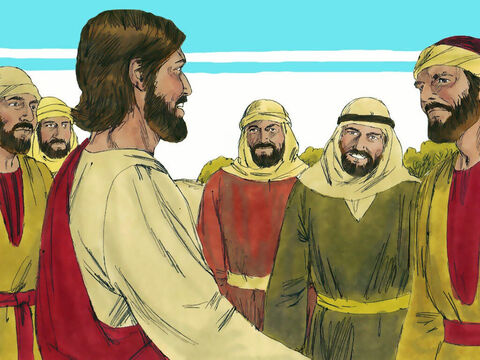
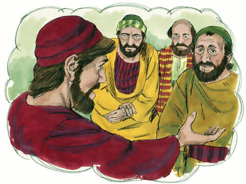
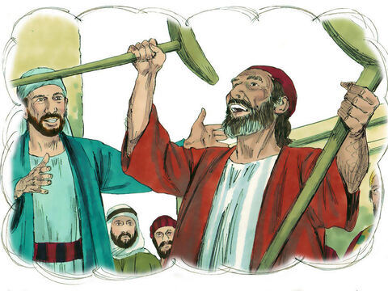
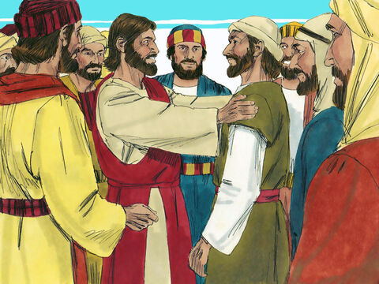
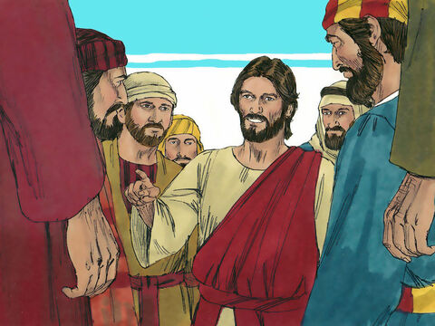
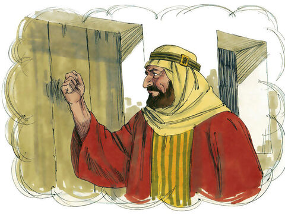
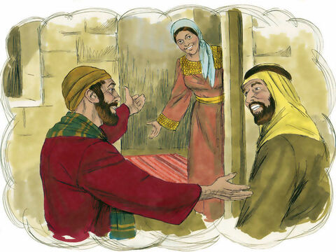
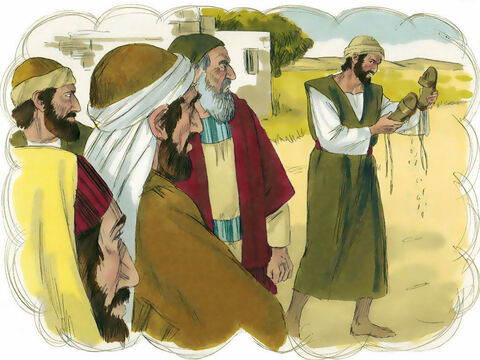

Lord Jesus Sends Out The Twelve
And when he had called unto him his twelve disciples, he gave them power against unclean spirits, to cast them out, and to heal all manner of sickness and all manner of disease.
Now the names of the twelve apostles are these; The first, Simon, who is called Peter, and Andrew his brother; James the son of Zebedee, and John his brother;
Philip, and Bartholomew; Thomas, and Matthew the publican; James the son of Alphaeus, and Lebbaeus, whose surname was Thaddaeus;
Simon the Canaanite, and Judas Iscariot, who also betrayed him.
These twelve Jesus sent forth, and commanded them, saying, Go not into the way of the Gentiles, and into any city of the Samaritans enter ye not:
But go rather to the lost sheep of the house of Israel.
And as ye go, preach, saying, The kingdom of heaven is at hand.
Heal the sick, cleanse the lepers, raise the dead, cast out devils: freely ye have received, freely give.
Provide neither gold, nor silver, nor brass in your purses,
Nor scrip for your journey, neither two coats, neither shoes, nor yet staves: for the workman is worthy of his meat.
And into whatsoever city or town ye shall enter, enquire who in it is worthy; and there abide till ye go thence.
And when ye come into an house, salute it.
And if the house be worthy, let your peace come upon it: but if it be not worthy, let your peace return to you.
And whosoever shall not receive you, nor hear your words, when ye depart out of that house or city, shake off the dust of your feet.
Verily I say unto you, It shall be more tolerable for the land of Sodom and Gomorrha in the day of judgment, than for that city.
Matthew 10:1-15
- 
- 
- 
- 
- 
- 
- 
- 